Pictorial cancels in Alberta
We have recorded 54 pictorial cancels in this province. 37 are still in use and can be requested from the post office, in person or by mail.
In use (37)
 Altario POOil pumpjack and wheat stalksActive · 2025–present
Altario POOil pumpjack and wheat stalksActive · 2025–present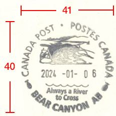
Bear Canyon PO2nd versionActive · 2016–present Black Diamond POTOWN OF BLACK DIAMONDActive · 2016–present
Black Diamond POTOWN OF BLACK DIAMONDActive · 2016–present Botha PODeer, maple leavesActive · 2025–present
Botha PODeer, maple leavesActive · 2025–present Boyle PO1954Active · 2025–present
Boyle PO1954Active · 2025–present Castor POThe Key to Success / La clé du succèsActive · 2024–2035
Castor POThe Key to Success / La clé du succèsActive · 2024–2035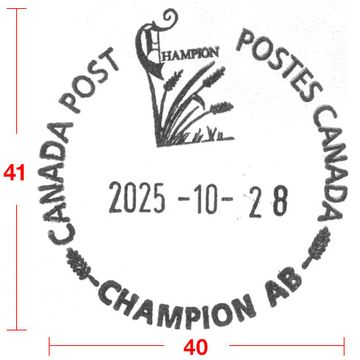
Champion POWheat stalksActive · 2021–present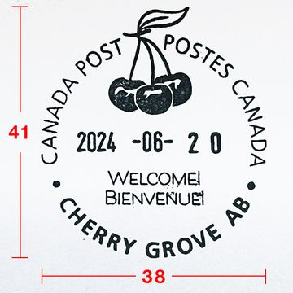
Cherry Grove POWelcome! Bienvenue!Active · 2021–present Clive POvillage of CliveActive · 2025–present
Clive POvillage of CliveActive · 2025–present Coaldale POA Wise Choice / Est. 1919Active · 2019–2030
Coaldale POA Wise Choice / Est. 1919Active · 2019–2030 Coronation PO2nd versionActive · 2018–2029
Coronation PO2nd versionActive · 2018–2029 Drumheller PO2nd versionActive · 2023–present
Drumheller PO2nd versionActive · 2023–present Eaglesham POEagleActive · 2015–present
Eaglesham POEagleActive · 2015–present Edmonton Main POCity HallActive · ?–present
Edmonton Main POCity HallActive · ?–present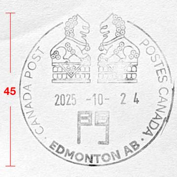
Edmonton Main POChineseActive · 2024–present Falher POHoney Capital of CanadaActive · ?–present
Falher POHoney Capital of CanadaActive · ?–present Falher POHope, Tenacity, ProsperityActive · ?–present
Falher POHope, Tenacity, ProsperityActive · ?–present Glendon POCanada's largest pyrogy / La plus grande pérogie du CanadaActive · 2024–present
Glendon POCanada's largest pyrogy / La plus grande pérogie du CanadaActive · 2024–present Grande Prairie CROTRUMPETER SWAN / CYGNE TROMPETTEActive · 2024–2035
Grande Prairie CROTRUMPETER SWAN / CYGNE TROMPETTEActive · 2024–2035 Hairy Hill PO2nd versionActive · ?–present
Hairy Hill PO2nd versionActive · ?–present Hanna PO2nd versionActive · 2015–2026
Hanna PO2nd versionActive · 2015–2026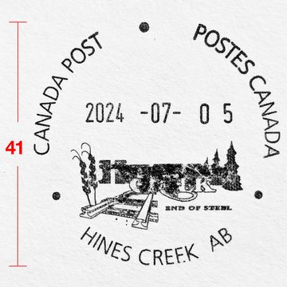
Hines Creek POEND OF STEELActive · ?–present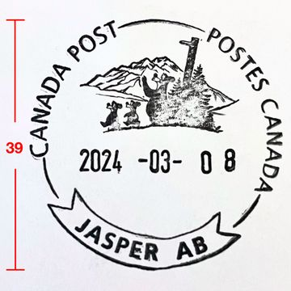
Jasper POBear family, trees, mountainsActive · ?–present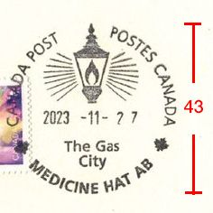
Medicine Hat POThe Gas CityActive · ?–present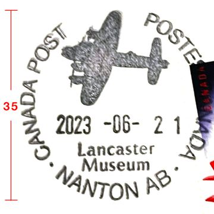
Nanton POLancaster MuseumActive · ?–present Newbrook PO2nd versionActive · 2020–present
Newbrook PO2nd versionActive · 2020–present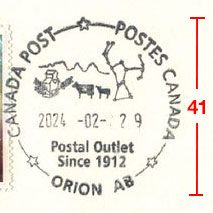
Orion and District Co-Op ASSConstellation, cowActive · 2016–present Peace River PONewActive · 2022–present
Peace River PONewActive · 2022–present Red Deer STN PODeer, maple leavesActive · ?–present
Red Deer STN PODeer, maple leavesActive · ?–present Redwater POWheat, oil derrickActive · 2021–present
Redwater POWheat, oil derrickActive · 2021–present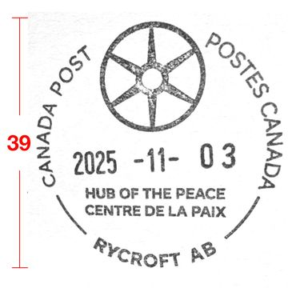
Rycroft POHUB OF THE PEACE / CENTRE DE LA PAIXActive · 2025–present Stavely POHome of Canada's First Indoor RodeoActive · 2015–2026
Stavely POHome of Canada's First Indoor RodeoActive · 2015–2026 Swan Hills POAlberta's Outdoor Recreation PlaygroundActive · 2015–2026
Swan Hills POAlberta's Outdoor Recreation PlaygroundActive · 2015–2026 Tangent PORoseActive · ?–present
Tangent PORoseActive · ?–present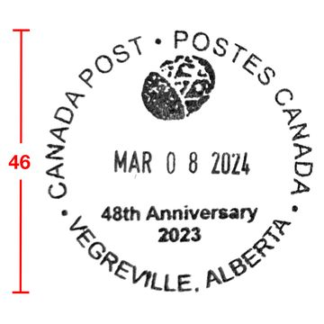
Vegreville PO2023 versionActive · 2023–present Vilna POWorld's largest mushrooms / Plus grands champignons au mondeActive · ?–present
Vilna POWorld's largest mushrooms / Plus grands champignons au mondeActive · ?–present Vulcan POStar Trek hand gestureActive · 2015–present
Vulcan POStar Trek hand gestureActive · 2015–present
Retired (17)
 Abee POHome of Abee MeteoriteExpired · 2004–2015
Abee POHome of Abee MeteoriteExpired · 2004–2015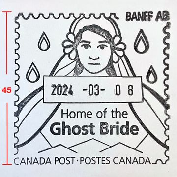
Banff Main POHome of the Ghost BrideExpired · 2015–2024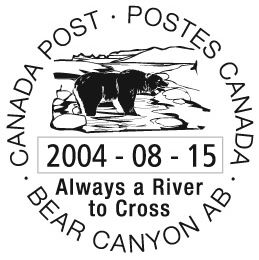
Bear Canyon PO1st versionExpired · 2004–?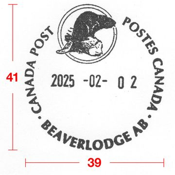
Beaverlodge POBeaverExpired · 2014–2025 Chipman PO1st versionExpired · 2004–?
Chipman PO1st versionExpired · 2004–? Chipman PO2nd versionExpired · 2012–2023
Chipman PO2nd versionExpired · 2012–2023 Coronation PO1st versionExpired · 2004–?
Coronation PO1st versionExpired · 2004–?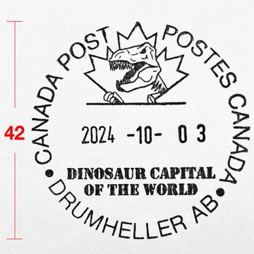
Drumheller PO1st versionExpired · ?–2024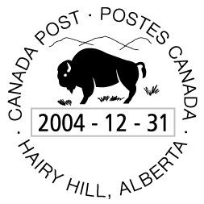
Hairy Hill PO1st versionExpired · 2004–? Hanna PO1st versionExpired · 2004–?
Hanna PO1st versionExpired · 2004–? Jasper POBearsExpired · ?–?
Jasper POBearsExpired · ?–?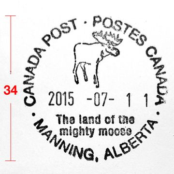
Manning POThe land of the mighty mooseExpired · 2004–2015 McLennan POBird Capital of CanadaExpired · 2005–2015
McLennan POBird Capital of CanadaExpired · 2005–2015 Monarch POMonarch ButterflyExpired · ?–2017
Monarch POMonarch ButterflyExpired · ?–2017 Newbrook PO1st versionExpired · 2004–?
Newbrook PO1st versionExpired · 2004–? Peace River POOldExpired · 2007–?
Peace River POOldExpired · 2007–?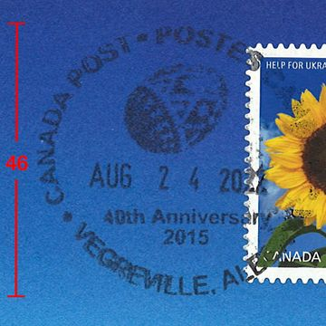
Vegreville PO2015 versionExpired · 2015–?
Other provinces and territories: British Columbia · Manitoba · New Brunswick · Newfoundland and Labrador · Nova Scotia · Ontario · Prince Edward Island · Quebec · Saskatchewan · Northwest Territories · Nunavut · Yukon